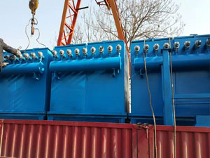
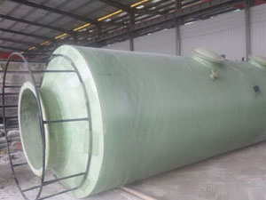
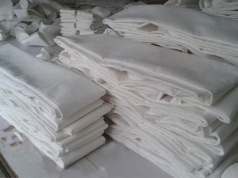

产品分类
全部产品 →

精品展示
产品中心 →


企业简介
详细介绍 →泊头市科惠除尘设备有限公司是制作除尘设备，小型锅炉除尘器、木工除尘器、布袋除尘器、脱硫除尘设备、除尘器布袋，脉冲布袋除尘器，除尘配件等生产企业。我公司采取“依靠科技，不断创新，紧密加工”的质量方针，秉承“诚信经营，品质优良，服务周到”的经营理念，始终坚持“质量第一、价格合理、信守合同、并提供可靠的技术服务，代办托运”的企业宗旨，为广大客户提供更加优惠的产品以及更加优质的服务。
主要产品有：锅炉行业除尘器、木工行业除尘器、白灰窑除尘器系列、脱硫除尘器系列、滤筒除尘器系列、布袋除尘器系列、单机除尘器系列、旋风除尘器系列、静电除尘器系列、除尘器布袋系列、除尘器骨架系列、电磁脉冲阀系列、脉冲控制仪(柜)系列、星型卸料器系列等。
生产现场
更多现场 →



新闻中心
全部新闻 →12
2020-11
除尘器布袋价格影响因素有哪些
除尘器布袋是布袋除尘器的主要核心部件，在水泥厂、发电厂、钢铁厂、化工厂、炭黑厂、食品加工厂、沥青混凝土搅拌厂等领域都有着重要的使用，市场对于它的使用量、需求量和购买量都非常大……

29
2020-10
常见的除尘器布袋所选择的材质是什么
不同材质的除尘器布袋在现在……
15
2020-10
如何加工布袋除尘器能保证更高的性价比
布袋除尘器是除尘设备的一种，它美观环保、运行稳定、除尘效率高、经济效益好、能耗少、噪音低，备受人们欢迎，在矿山、水泥、煤电、钢铁、冶金、塑料、陶瓷、铸造……
17
2020-09
除尘器布袋定制加工 厂家是理想选择
除尘器布袋是除尘器上的一个重要零部件，在工业上的很多领域中都有着重要的使用，市场对于它的使用量、需求量和购买量都非常大。当购买除尘布袋的时候，定制不……